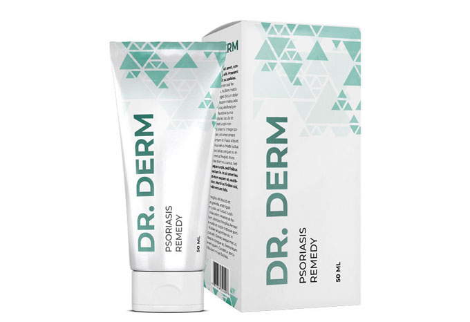

Autor: Inessa Gawriłowa |
Autor: Inessa Gawriłowa |
Witam!
Drodzy przyjaciele, chciałabym się z państwem podzielić, jak wyleczyłam siebie i córkę z łuszczycy i to nam naprawdę pomogło.
 Moje nogi przed i po wyleczeniu łuszczycy
Moje nogi przed i po wyleczeniu łuszczycy
Bolączki od cukierków
Wszystko zaczęło się jeszcze w młodym wieku, kiedy chodziłam do przedszkola. Zaczerwienienia pojawiły się na moich rękach w postaci małych łusek. Potem - pod kolanami i na łokciach. Matka myślała, że bolączki od słodyczy i mandarynek, bo taka ilość słodyczy w moim dzieciństwie była tylko w Nowy Rok.
Święta się skończyły, ale nie czułam się lepiej: zaczerwienienia zaczęły się łuszczyć i pękać, odczuwałam ogromny ból! Ostatecznie zdiagnozowano u mnie łuszczycę.
 Choroba stała się moim wyrokiem
Choroba stała się moim wyrokiem
Do ukończenia uniwersytetu smarowałam różne kremy i żele, które były przepisywane przez lekarzy, wszystkie były oparte na betametazonie z glukokortykosteroidem, czyli hormonalne. A to jest bardzo niebezpieczne, całkowicie zabija układ odpornościowy. Ale co robić?! Coś, trzeba było zaleczyć rany.
Matka słuchała rad koleżanek i przynosiła różne maści przygotowane przez uzdrowicieli, przygotowywała mieszanki w laboratoriach lokalnych aptek, ale wszystkie wysiłki zostały zredukowane do zera, choroba wracała znowu i znowu.
Małżeństwo
Wyszłam za mąż w czasie remisji, urodziłam dziecko. Kiedy choroba powróciła, mój mąż, widząc to, uciekł ode mnie jak od trędowatej. Zarzucił też mojej teściowej, że nie ostrzegła przed chorobą. Rozwiodłam się, a my z moją matką i córką zamieszkałyśmy nad morzem. Myślałam, że słońce i słona woda wpłyną na moje zdrowie, ale nic się nie zmieniło. Wróciliśmy do domu.
 Morze nie uratowało mnie od łuszczycy
Morze nie uratowało mnie od łuszczycy
Przez cały ten czas moja matka wspierała mnie i pomagała w domu, robiła pranie dla mnie, kiedy nie było nowoczesnych pralek. Ręce raz po raz pokrywały się różową skórką i pękały krwią ze straszną siłą! Często były bandażowane, więc moja matka była tam cały czas i starała się mi pomóc.
Robiłam sałatki, bo wszystko drażniło moje ręce: ogórki kiszone, pomidory - wszystkie produkty, z których wydziela się sok. Oczywiście bardzo chciała ułatwić mi życie.
 Moje ręce przed i po leczeniu
Moje ręce przed i po leczeniu
Na progu depresji
Przyzwyczaiłam się do tego, że moja matka zawsze była obok - opatrywała rany, bandażowała, robiła wszystko zamiast mnie... Po prostu przyzwyczaiłam się do życia z tą chorobą. Ale kiedy moja córka zachorowała na łuszczycę, zaczęła się u mnie prawdziwa depresja.
Ostatnią rzeczą na świecie, jaką chciałam, żeby przeszła przez te wszystkie piekielne kręgi, przez które musiałam przejść. Najgorsze jest to, że wypróbowałyśmy wszystkie metody i żadna z nich nie okazała się tak skuteczna, aby uwolnić mnie od łuszczycy na zawsze. Oznaczało to, że nie mogę też wyleczyć mojej córki.
 Widok choroby mojej córki był nie do
zniesienia...
Widok choroby mojej córki był nie do
zniesienia...
Nowa nadzieja
Wiedząc o moim problemie, pewnego razu mojej matce w pracy w dziale księgowości dali płytę z nagraniem wideo o leczeniu łuszczycy. Kiedy usiedliśmy przy komputerze i zobaczyłyśmy na ekranie objawy podobne do moich, zapłakałam. Słynny naukowiec, doktor nauk medycznych Mikołaj Dowżenko mówił o tym, jak można wyleczyć łuszczycę.
Okazuje się, że istnieje lek, który nie zawiera hormonów. Nazywa się . Producenci twierdzą, że ma działanie kumulatywne. Według profesora, lek przenika do dolnych warstw naskórka i leczy skórę od wewnątrz.
Oczywiście stosowanie pomaga osiągnąć remisję prawie na całe życie. Wystarczy postępować zgodnie z instrukcjami.

Łuszczyca pokonana
Myślałem, że to będzie bardzo trudne, ale matka wzięła się za mnie i wyraźnie kontrolowała, kiedy i jak aplikować lek. Choroba zaczęła powoli ustępować. Łuski zamieniły się w różowe plamki, a potem całkowicie zniknęły. Używałam kremu 5 -6 razy dziennie, dokładnie według zegarka.
W ciągu kursu leczenia całkowicie pozbyłam się choroby i wyleczyłam córkę. Słowa nie wyrażą, jak bardzo się martwiłam, że dziecko będzie musiało doświadczyć całego koszmaru, przez który przeszłam. Dzięki Bogu, teraz jestem pewna, że tego nie będzie.
 Moja córka i ja razem wyzdrowiałyśmy!
Moja córka i ja razem wyzdrowiałyśmy!
A moje piękne, zadbane ręce są teraz przyozdobione obrączką (kiedyś wstydziłam się nosić biżuterię na palcach). A mój ukochany nawet nie wie, że kiedyś miałam łuszczycę!
Kocham wszystkich! Dziękuję za otrzymanie tego wideo i tego środka na czas. Użyj tego leku, a będziesz zdrowy i szczęśliwy!